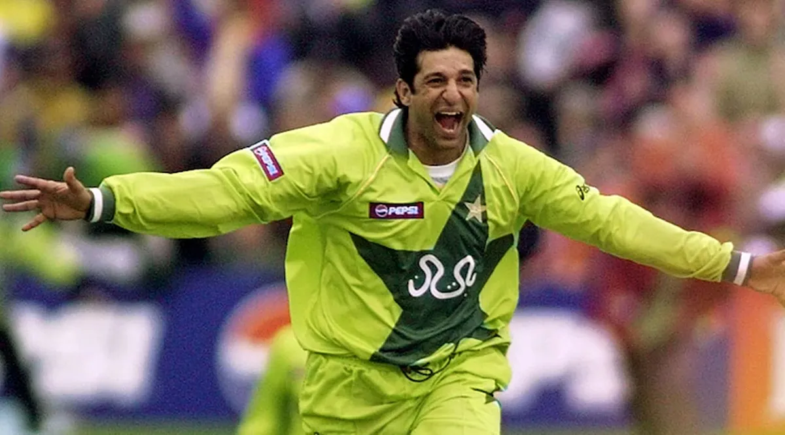

.png)

Swing bowlers are well known to rattle batsmen by their ability to move the ball in the air, followed by late movement off the pitch as well.
A swing bowler is also one of the most high-priority factors of any team because apart from leg-spinners and off-spinners, only genuine swing bowlers own the expertise to produce breakthroughs out of nowhere.
While it is a difficult art to master, it is also one that yields the best outcome. Some fast bowling maestros would make influential invasions early on with the new ball with their in-swingers and out-swingers and some who’d get wickets with a 30-35 overs old ball and deceive with their "hand and brain" to create an unusual rough on the ball to generate reverse swing.
Over the years, lots of fast, swing-focused bowlers came and ruled the world of cricket. Some frustrated batsmen with a calamitous pace while others had the batsmen dance to their tune with an exquisite swing.
To be honest, it is quite challenging to select the top 6 from a long list of exceptional fast-swing bowling icons.
Please note that James Anderson, the greatest English bowler, is included in our other list of the greatest fast bowlers, but of course, could have a place in this list as well.
1. Wasim Akram – Pakistan
The cricketing world has probably never seen a more talented and versatile bowler than Wasim Akram. With 502 wickets in 356 ODIs and 414 wickets in 104 tests (the only bowler besides Muttiah Muralitharan to achieve this feat), Akram burst into international cricket with relatively no first-class experience after being spotted at a cricketing camp by Pakistani batting legend, Javed Miandad at Lahore.
In his prime, Akram was the epitome of the supreme fast bowler, he was tall, hit the deck hard, had great control on his line & length, and more importantly, had the ability to swing the bowl in both directions.
Under the guardianship of the great Imran Khan, he also manifested the strength to reverse the ball. This made the "Sultan of Swing" one of the toughest bowlers to play. Along with his partner-in-crime, Waqar Younis, the two formed one of the most fearsome bowling attacks.
2. Richard Hadlee – New Zealand
In his time he was regarded as the best swing bowler in the cricketing world. Sir Richard Hadlee was one of the greatest players to ever play test cricket. His bowling remains the reason why New Zealand was competitive during his career.
In just 86 tests, Hadlee picked up 431 wickets at a bowling average of 22.30. While he has also registered 158 wickets in 115 ODIs under his name. He is a perfect standard or benchmark for fast-bowling perfection to date. The Black Caps superstar was idolized and hailed by the cricketing greats like Ian Botham, Malcolm Marshall, Imran Khan, and Kapil Dev.
They, jointly agree that Richard Hadlee is completely unmatched. His dynamic combination of pace, accuracy, seam and swing earned him success throughout his career. Hadlee is one of the greatest all-rounders the world has seen.
3. James Anderson - England
James ‘Jimmy’ Anderson is England’s all-time leading wicket-taker, and at the time of writing, at 40 years old, is still playing test cricket at the highest level.
Anderson burst onto the scene in 2003 and took 5 wickets on test debut against Zimbabwe, and has not really looked back since!
Anderson is known to be one of the most skillful bowlers in cricket history, with the ability to move the ball both ways, with his stock outswinger often impossible to tell apart from the reversing ball until the very last moment.
He is probably best known for his hooping away swingers, forcing the batter to commit to a shot with the ball starting on off stump and kicking away as it angles towards 2nd slip.
The issue of course is that just as you think you have read that ball it comes back in the other way!
Anderson is without a doubt one of the greatest bowlers of all time, full stop, but until his career is over, we will not truly appreciate his greatness.
4. Waqar Younis – Pakistan
Waqar Younis, perhaps, had the most perfect attributes required for reverse swing, and man, didn’t he make the most of it! Holding a slinky round-arm action and bowling at 145 kmph+ in his glory, Younis was absolutely unplayable once the ball started reversing. His stock ball was a toe-crushing in-swinging Yorker bowled at over 150 kmph.
There were many occasions when the batting team, while playing against Pakistan, would be cruising before Waqar, in collaboration with Akram, would come in and skittle the team out in a destructive burst of reverse swing bowling.
He took 373 wickets from 87 Tests at an average of 23.56 and carried the batsmen 416 times away from the crease in 262 ODIs with an outstanding average of 23.78.
The reason why we believe that Waqar Younis, the "Burewala Express", was the most prolific bowler in the cricketing world is that he outclassed in all situations and on every surface with his swinging art!
5. Glen McGrath – Australia

Talking about Aussie fast bowlers, Glenn McGrath is undoubtedly one of the greatest cricketers to represent Australia. He didn't have too much pace, yet could trouble the batsmen with his perfect seam position, splendid line n length, vicious swing, and uncomfortable bounce he could extract.
On top of that, McGrath was remarkably accurate and compact, making life difficult for the best of batsmen.
With the attention and absorption of a Yogi, he would exploit the “corridor of uncertainty” and would get the bowl to move just a bit, but well enough to produce an outside edge. It is surprising to see that a bowler who used to bowl around 130 kmph inspired the kind of trepidation in batsmen that Glenn McGrath did.
No performance of McGrath can come close to his 8/38 vs England in the Ashes 1997 at Lord’s. Collectively, this shining Aussie has hammered 563 batsmen in just 124 test encounters. While he has got 381 wickets in 250 ODIs under his belt. Indeed, his swing bowling is an outstanding benchmark in the history of cricket.
Comments